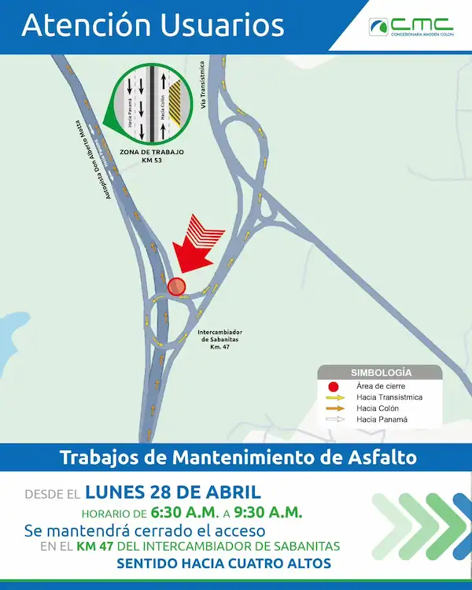

Debido a trabajos de mantenimiento de asfalto a la altura del km 53, a partir del lunes 28 de abril se mantendrá habilitado un solo carril para los usuarios que utilicen la autopista Don Alberto Motta sentido Panamá - Colón.
Los usuarios que se dirigen desde Sabanitas hacia Cuatro Altos no tendrán acceso a la autopista por el intercambiador de Sabanitas (km 47) en horario de 6:30 a.m. a 9:30 a.m.
Los usuarios que ingresen desde Madden (km 13) con dirección a Cuatro Altos podrán transitar con normalidad.
